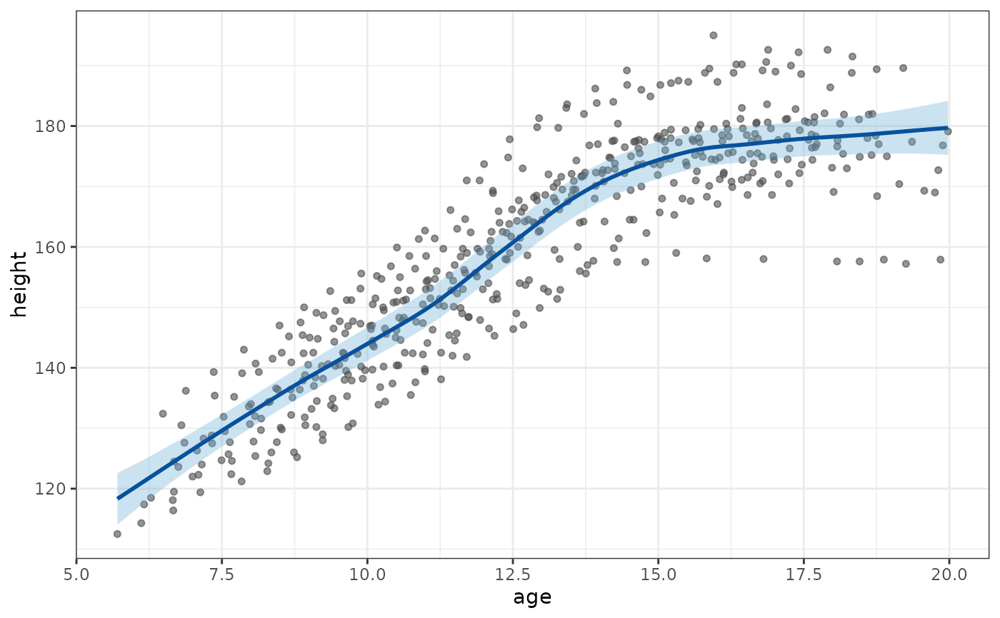

Repeated height measurements of 216 adolescents, about every 6 months between the ages of 5 and 20, from a study
of the development of hypertension at the Indiana University School of Medicine, Indianapolis (Pratt et al.
1989); the same data as HRW::growthIndiana. The data of M. P. Wand's examples of subject-specific
curves (Harezlak, Ruppert and Wand 2018, section 9.2), which semireg reproduces
(tests/testthat/test-semireg-golden.R).
Usage
data(growthIndiana)Format
A data frame with 4123 rows and 5 columns:
- idnum
identification number of the adolescent.
- height
height (cm).
- age
age (years).
- male
1 for a boy, 0 for a girl.
- black
1 for a black adolescent, 0 otherwise.
Source
Pratt, J. H., Jones, J. J., Miller, J. Z., Wagner, M. A. and Fineberg, N. S. (1989). Racial differences in aldosterone excretion and plasma aldosterone concentrations in children. New England Journal of Medicine, 321, 1152-1157.
References
Harezlak, J., Ruppert, D. and Wand, M. P. (2018). Semiparametric Regression with R. Springer.
Examples
data(growthIndiana)
# black boys: a mean curve, and each boy's own curve, a straight line (age | idnum)
# plus a spline deviation with one variance for all boys
gbm <- subset(growthIndiana, male == 1 & black == 1)
gbm$idnum <- factor(gbm$idnum)
fit <- semireg(height ~ s(age, bs = "os", k = 20, xt = list(range = c(5.5, 20))) +
(s(age, k = 10, xt = list(range = c(5.5, 20))) | idnum), data = gbm)
anova(fit)$smooth # are the boys' curves straight lines?
#> term variance logLik logLik.without LRT p.value
#> 1 s_age 9.070032 -935.7451 -974.5493 77.60836 6.281847e-19
#> 2 s_age_idnum 18.184943 -935.7451 -1181.2087 490.92721 4.477475e-109
#> test
#> 1 0.5 chi2(0) + 0.5 chi2(1)
#> 2 0.5 chi2(0) + 0.5 chi2(1)
semipred(fit, "age", "age")$plt

if (FALSE) { # \dontrun{
# (about 30 s: 2257 measurements, 130 boys' curves)
# all boys: a common curve and a black-white deviation curve (the contrast curve of
# Harezlak, Ruppert and Wand); at which ages do the races differ, and in growth rate?
gm <- subset(growthIndiana, male == 1)
gm$idnum <- factor(gm$idnum)
gm$race <- factor(ifelse(gm$black == 1, "black", "white"))
fit2 <- semireg(height ~ s(age, race, bs = "os", k = 20, xt = list(range = c(5.5, 20))) +
(s(age, k = 10, xt = list(range = c(5.5, 20))) | idnum), data = gm)
dif <- semipred(fit2, "race", "age", contr = c("black", "white"), band = "simultaneous")
attr(dif$pred_df, "significant")
semipred(fit2, "race", "age", deriv = 1)$plt # growth rates
predictmeans(fit2, "race", covariate = c(age = 12))$means
} # }